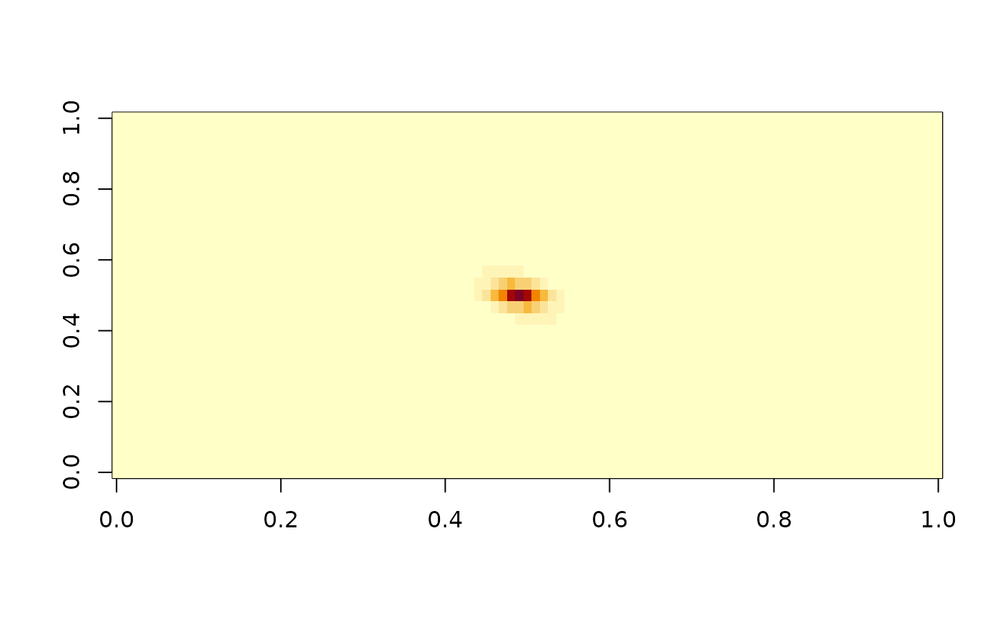

spacetime.operators is used for computing a FEM approximation of a Gaussian
random field defined as a solution to the SPDE
$$d u + \gamma(\kappa^2 + \kappa^{d/2}\rho \cdot\nabla - \Delta)^\alpha u = \sigma dW_C.$$
where C is a Whittle-Matern covariance operator with smoothness parameter
\(\beta\) and range parameter \(\kappa\)
Usage
spacetime.operators(
mesh_space = NULL,
mesh_time = NULL,
space_loc = NULL,
time_loc = NULL,
graph = NULL,
kappa = NULL,
sigma = NULL,
gamma = NULL,
rho = NULL,
alpha = NULL,
beta = NULL,
graph_dirichlet = TRUE,
bounded_rho = TRUE,
bound_rho = NULL
)Arguments
- mesh_space
Spatial mesh for FEM approximation
- mesh_time
Temporal mesh for FEM approximation
- space_loc
Locations of mesh nodes for spatial mesh for 1d models.
- time_loc
Locations of temporal mesh nodes.
- graph
An optional
metric_graphobject. Replacesmeshfor models on metric graphs.- kappa
Positive spatial range parameter
- sigma
Positive variance parameter
- gamma
Temporal range parameter.
- rho
Drift parameter. Real number on metric graphs and one-dimensional spatial domains, a vector with two number on 2d domains.
- alpha
Integer smoothness parameter alpha.
- beta
Integer smoothness parameter beta.
- graph_dirichlet
For models on metric graphs, use Dirichlet vertex conditions at vertices of degree 1? When
bounded_rho = TRUE, therspde_lmemodels enforce boundedrhofor consistency. If the estimated value ofrhoapproaches the upper bound too closely, we recommend refitting the model withbounded_rho = FALSE. However, this should be done with caution, as it may lead to instability in some cases, though it can also result in a better model fit. The actual bound used forrhocan be accessed from thebound_rhoelement of the returned object.- bounded_rho
Logical. Specifies whether
rhoshould be bounded to ensure the existence, uniqueness, and well-posedness of the solution. Defaults toTRUE. Note that this bounding is not a strict condition; there may exist values of rho beyond the upper bound that still satisfy these properties.- bound_rho
A positive number specifying the bound for
rho. IfNULL, the default bound will be used.
Examples
s <- seq(from = 0, to = 20, length.out = 101)
t <- seq(from = 0, to = 20, length.out = 31)
op_cov <- spacetime.operators(space_loc = s, time_loc = t,
kappa = 5, sigma = 10, alpha = 1,
beta = 2, rho = 1, gamma = 0.05)
Q <- op_cov$Q
v <- rep(0,dim(Q)[1])
v[1565] <- 1
Sigma <- solve(Q,v)
image(matrix(Sigma, nrow=length(s), ncol = length(t)))
